# Digital Humanities and the Law<br/>Modul 2:<br/>Recht und Digital Humanities in der Praxis <br/><br/> **Christof Schöch (Trier)** <br/><br/> **Seminar im Master Digital Humanities<br/>Sommersemester 2021** <br/><br/><br/> <img data-src="img/basics/tcdh-slim.png" height="50"></img> <img data-src="img/basics/uni-trier.png" height="50"></img> -- ### Überblick 1. [Organisatorisches](#/2) 1. [Nachtrag: Leitfaden-Durchsicht](#/3) 1. [Text und Data Mining in den DH](#/4) 1. [Lektürephase](#/6) -- ### Organisatorisches --- ### Modul 2 * Heutige Sitzung: Einführung * Lektürephase * Sitzung am 22.6.: TDM-Schranke, Recht in MiMoText * Lektürephase * Sitzung am 13.7.: Abgeleitete Textformate --- ### Prüfungsleistung * Hausarbeit (35.000 Zeichen) * Anmeldung zur Prüfung in PORTA * Mögliche Themen: * An der Schnittstelle von DH und Recht * Ansonsten frei wählbar * Eher theoretisch oder praktisch --- ### Einige Themenideen 1. Die Entwicklung der rechtlichen Rahmenbedingungen für Text und Data Mining seit der EG-Urheberrichtlinie von 2001 1. Der Vergleich mehrerer Textfassungen in den Rechtswissenschaften: Nutzungsszenarien, Anforderungen, Tools (Pilot) 1. Stilometrische Autorschaftsattribution mit abgeleiteten Textformaten: Evaluationsstudie (Pilot) 1. (weitere sicherlich im Verlauf der nächsten Sitzungen...) -- ## Nachtrag Leitfaden-Durchsicht --- ### Vergleich von Textfassungen in den DH * Beispiel: _The Martian_ von Andy Weir * https://christofs.github.io/martian/#/ --- ### Vergleich von Textfassungen (mit Meld) 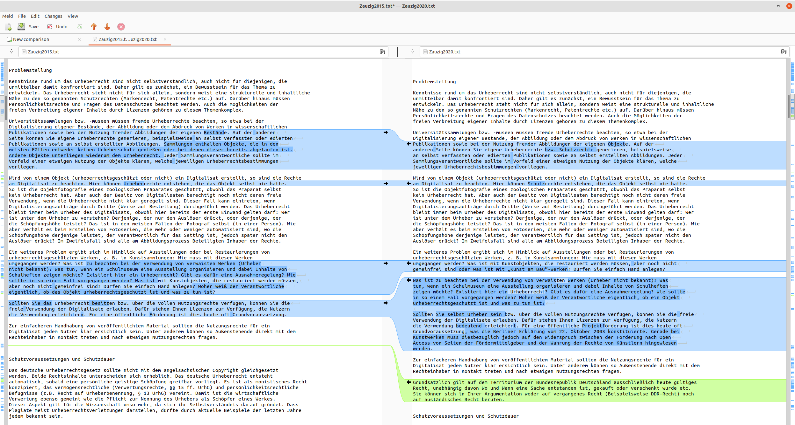</img> -- ## Text und Data Mining<br/>in den DH --- ### Anwendungsbereiche * Autorschaftsattribution <!-- .element: class="fragment" data-fragment-index="1" --> * Gattungsstilistik <!-- .element: class="fragment" data-fragment-index="2" --> * Netzwerkanalyse <!-- .element: class="fragment" data-fragment-index="3" --> * Inhaltsanalyse (Begriffe, Topics) <!-- .element: class="fragment" data-fragment-index="4" --> * Automatische Kartierung <!-- .element: class="fragment" data-fragment-index="5" --> * Extraktion von Zeitstrukturen <!-- .element: class="fragment" data-fragment-index="6" --> * Erkennung erzähltheoretischer Kategorien <!-- .element: class="fragment" data-fragment-index="7" --> * uvm. <!-- .element: class="fragment" data-fragment-index="7" --> --- ### Relevante Aspekte * Aufbau von Korpora <!-- .element: class="fragment" data-fragment-index="1" --> * Primärliteratur * Forschungsliteratur * Methoden der Textanalyse <!-- .element: class="fragment" data-fragment-index="2" --> * Anwendung auf Primärliteratur * Anwendung auf Forschungsliteratur --- ### Aufbau von Korpora * Korpusdesign: Repräsentativität vs. Balanciertheit <!-- .element: class="fragment" data-fragment-index="1" --> * Textauszeichnung: XML-TEI <!-- .element: class="fragment" data-fragment-index="2" --> * Metadaten-Modellierung <!-- .element: class="fragment" data-fragment-index="3" --> * Kanonisierung, Digitalisierung, Korpus <!-- .element: class="fragment" data-fragment-index="4" --> --- ### Korpusdesign 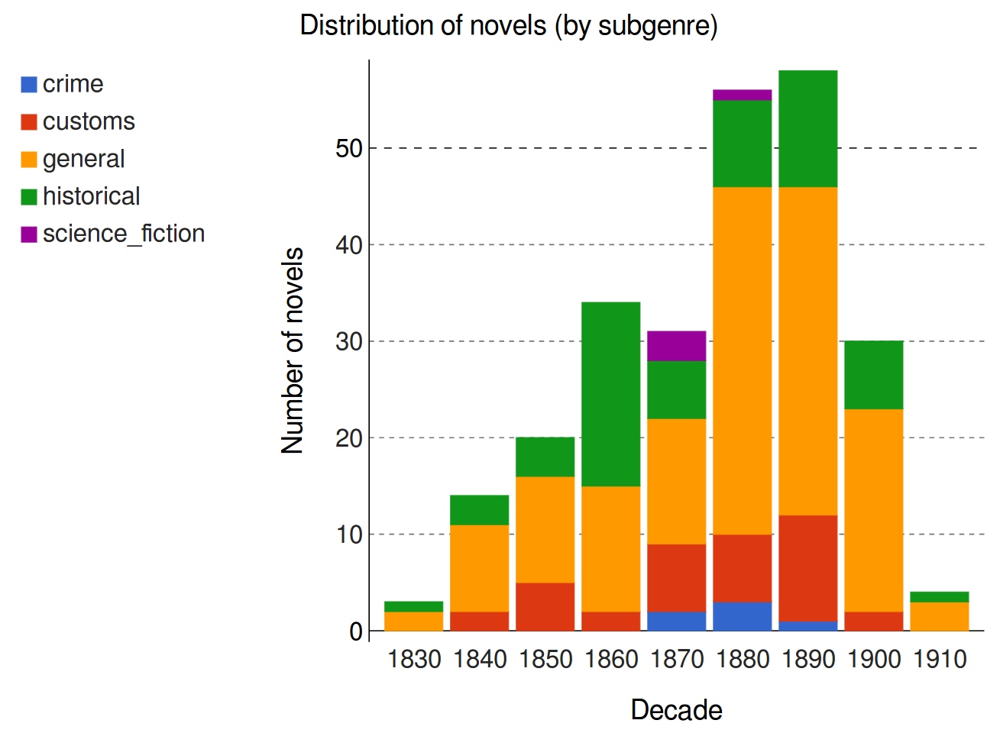</img> <br/>(Ulrike Henny-Krahmer) --- ### Textauszeichnung 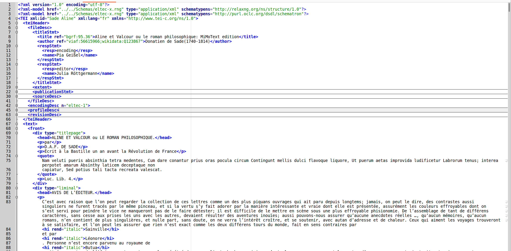</img> --- ### Methoden der Textanalyse * Linguistische Annotation (POS, NER) <!-- .element: class="fragment" data-fragment-index="1" --> * Korpusanalyse <!-- .element: class="fragment" data-fragment-index="2" --> * Erkennung der Rede- und Gedankenwiedergabe <!-- .element: class="fragment" data-fragment-index="3" --> * Stilometrische Autorschaftsattribution <!-- .element: class="fragment" data-fragment-index="4" --> * Topic Modeling <!-- .element: class="fragment" data-fragment-index="5" --> * Netzwerkanalyse <!-- .element: class="fragment" data-fragment-index="6" --> * Sentiment Analyse <!-- .element: class="fragment" data-fragment-index="7" --> * Machine Learning: Klassifikation <!-- .element: class="fragment" data-fragment-index="8" --> * Machine Learning: Clustering <!-- .element: class="fragment" data-fragment-index="9" --> * Text Re-Use <!-- .element: class="fragment" data-fragment-index="10" --> * Kontrastive Analyse / Distinktive Merkmale <!-- .element: class="fragment" data-fragment-index="11" --> * Kollationierung <!-- .element: class="fragment" data-fragment-index="13" --> --- ### Linguistische Annotation (POS, NER) <img data-src="img/nltk.png" height="450"></img> <br/>Tools: TreeTagger, NLTK, spaCy --- ### Korpusanalyse 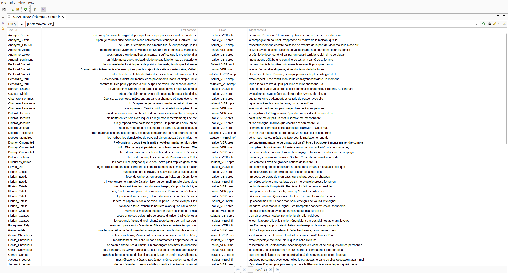</img> <br/>Tools: TXM, Antconc, Wordsmith uvm. --- ### Erkennung der Rede- und Gedankenwiedergabe 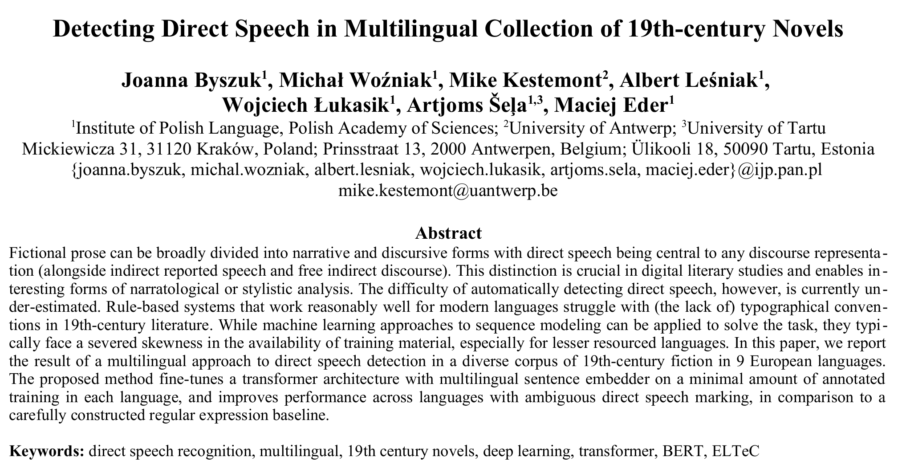</img> <br/>Tools: selbst programmiert (hier Python/BERT) --- ### Stilometrische Autorschaftsattribution 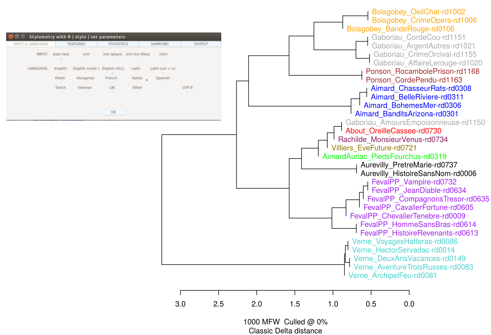</img> <br/>Tools: stylo (R), pydelta (Python) --- ### Topic Modeling 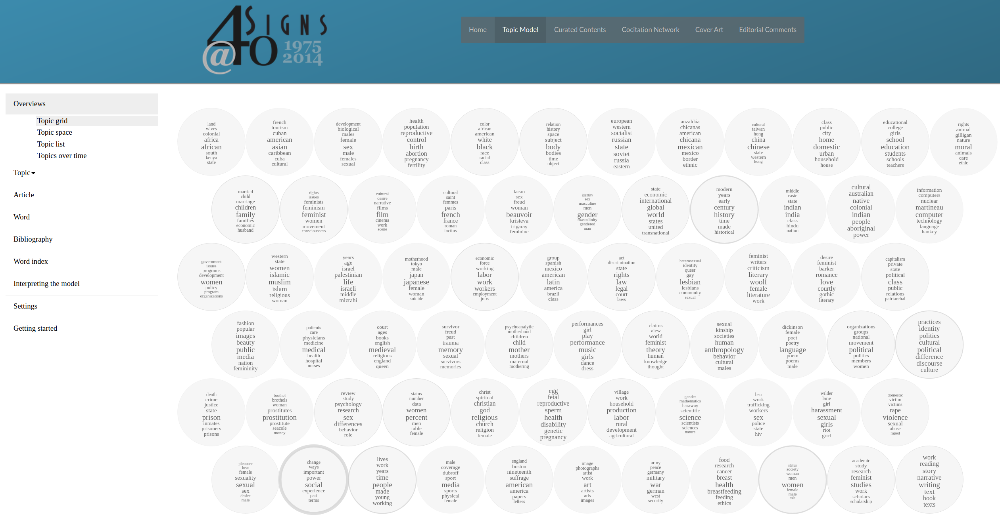</img> <br/>Tools: MALLET, gensim, pyLDAvis, etc. --- ### Netzwerkanalyse 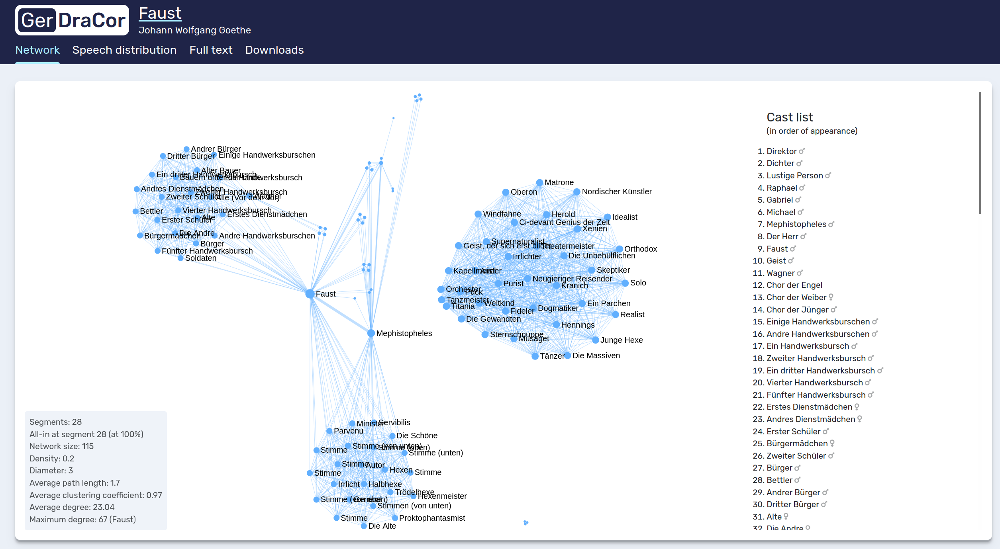</img> <br/>Tools: Gephi, NetworkX, cytoscape, DraCor --- ### Sentiment Analyse 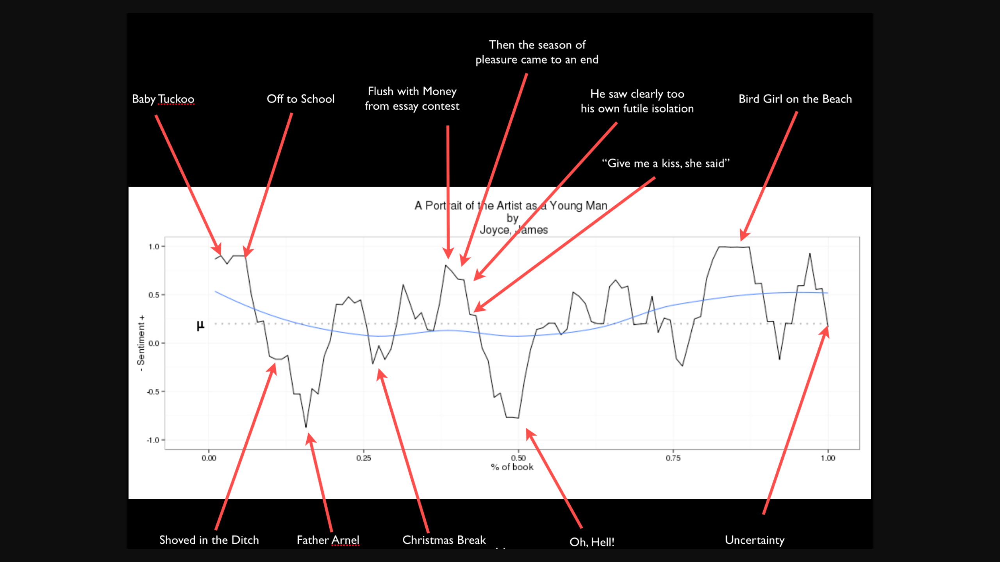</img> <br/>Tools: syuzhet (+Dictionaries) --- ### Machine Learning: Klassifikation 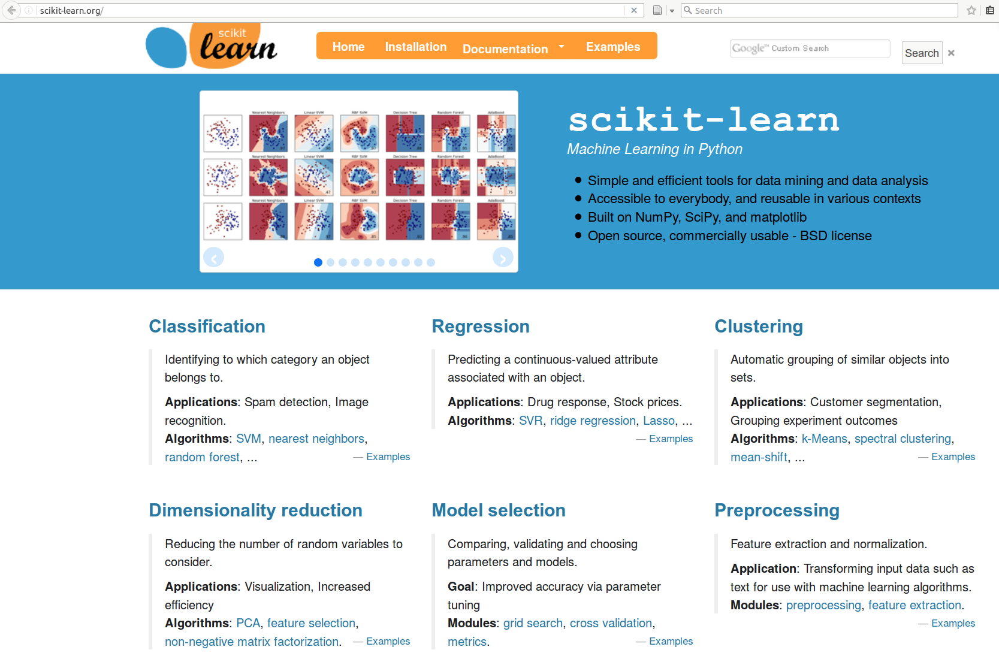</img> <br/>Tools: MALLET, Weka, sklearn (ML), Tensorflow (DL) --- ### Machine Learning: Clustering <img data-src="img/3_threeway_pca.png" height="450"></img> <br/>Tools: sklearn (ML), Tensorflow (DL) --- ### Text Re-Use 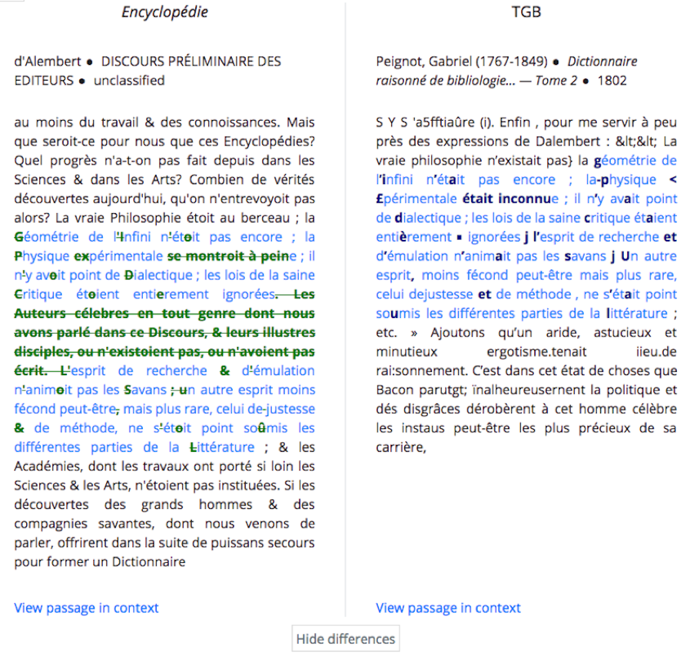</img> <br/>Tools: text matcher, TRACER, etc. --- ### Kontrastive Analyse / Distinktive Merkmale 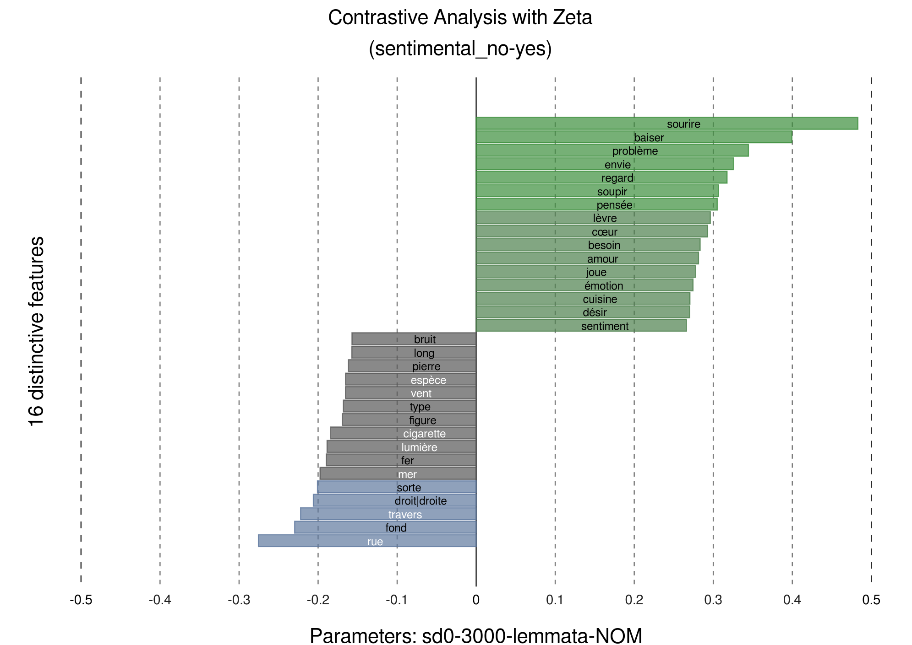</img> <br/>Tools: stylo, pyzeta --- ### Kollationierung 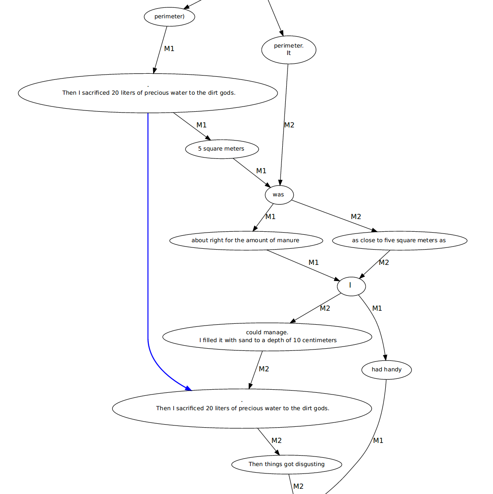</img> <br/>Tools: Juxta, collateX, coleto -- ## Rechtliche Dimensionen im Überblick --- ### Rechtliche Dimensionen 1. Korpora zeitgenössischer Literatur: Urheberrecht <!-- .element: class="fragment" data-fragment-index="1" --> 1. Korpora von Forschungsliteratur: Urheberrecht <!-- .element: class="fragment" data-fragment-index="2" --> 1. Vervielfältigung wissenschaftlicher Ausgaben: Urheberrecht <!-- .element: class="fragment" data-fragment-index="3" --> 1. Vervielfältigung von Datenbanken: Leistungs-Schutzrecht <!-- .element: class="fragment" data-fragment-index="4" --> 1. Publikation von Snippets: Urheberrecht, Zitatrecht <!-- .element: class="fragment" data-fragment-index="5" --> 1. Publikation von Korpora: Lizenzen <!-- .element: class="fragment" data-fragment-index="6" --> 1. Publikation von Analyse-Software: Lizenzen <!-- .element: class="fragment" data-fragment-index="7" --> -- ## Lektürephase --- ### Lektüren * siehe Seminarplan --- ### Leitfragen 1. Warum gibt es überhaupt einen Bedarf für eine TDM-Schranke? 1. Unter welchen Bedingungen und mit welchen Einschränkungen darf man derzeit TDM mit urheberrechtlich geschützten Texten durchführen? 1. Wie haben sich die Rahmenbedingungen in den letzten 3 Jahren verändert? 1. Kann man mit dem derzeitigen Stand zufrieden sein?